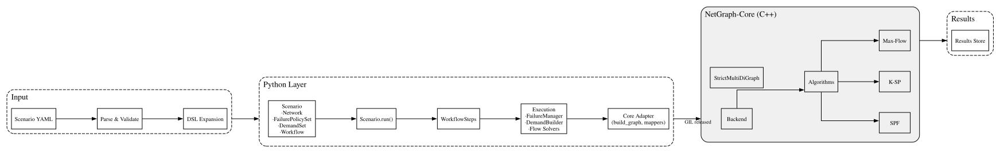

NetGraph Design and Implementation¶
This document describes NetGraph's internal design: scenario DSL, data models, execution flow, algorithms, manager components, and result handling. It focuses on architecture and key implementation details.
Overview¶
NetGraph is a network scenario analysis engine. It takes a scenario (defined in a YAML DSL) as input, builds a directed multigraph model of the network, and runs a configurable workflow of analysis steps (like traffic placement or max-flow capacity) to produce structured results. Key components include:
-
CLI and API: Entry points to load scenarios and invoke analyses.
-
Scenario DSL Parser: Validates and expands the YAML scenario into an internal model.
-
Domain Model: In-memory representation of nodes, links, risk groups, etc., with selection and grouping utilities.
-
NetworkView: A read-only overlay on the model to simulate failures or what-if scenarios without altering the base network.
-
Graph construction: Builds a
StrictMultiDiGraph(anetworkx.MultiDiGraphsubclass) from theNetworkorNetworkViewfor consumption by SPF/KSP/MaxFlow (compact or full, optional reverse edges). -
Algorithms: Core graph algorithms: shortest paths (SPF and KSP, k-shortest paths) and max-flow, with configurable edge selection and flow splitting strategies.
-
Managers: Orchestrators for higher-level behaviors, e.g., expanding demands over time or enumerating failure cases.
-
Workflow Engine: Composes steps (graph build, demand placement, max flow, etc.) into end-to-end analyses, storing outputs in a results store.
-
Results Store: Collects outputs and metadata from each step, enabling structured JSON export for post-analysis.
Execution Flow¶
The diagram below shows simplified end-to-end execution flow from scenario input to results.

Scenario DSL and Input Expansion¶
NetGraph scenarios are defined in YAML using a declarative DSL (see DSL Reference). The DSL allows concise specification of network topologies, traffic demands, failure policies, and analysis workflows. Before execution, scenario files are validated against a JSON Schema to catch errors early (unknown keys, type mismatches), enforcing strict definitions.
Key elements of the DSL include:
-
Seed: A master random seed for the scenario to ensure deterministic behavior across runs.
-
Blueprints: Reusable templates for subsets of the topology. A blueprint defines internal node types, roles, and optional internal links. Blueprints enable defining a complex multi-node topology once and instantiating it multiple times with different parameters.
-
Groups: Definitions of groups of nodes in the topology, either explicitly or via patterns. Groups can use a blueprint (use_blueprint) with parameters, or define a number of nodes (node_count) with a naming template.
-
Adjacency: Rules to generate links between groups of nodes. Instead of enumerating every link, an adjacency rule specifies source and target selectors (by path pattern), a wiring pattern (e.g. mesh for full mesh or one_to_one for paired links), number of parallel links (link_count), and link parameters (capacity, cost, attributes like distance, hardware, risk group tags, etc.). Advanced matching allows filtering nodes by attributes with logical conditions (AND/OR) to apply adjacency rules to selected nodes only. A single rule can thus expand into many concrete links.
-
Overrides: Optional modifications applied after the initial expansion. node_overrides or link_overrides can match specific nodes or links (by path or endpoints) and change their attributes or disable them. This allows fine-tuning or simulating removals without changing the base definitions.
-
Risk Groups: Named shared-risk groups (potentially nested) that nodes or links can belong to. These are used in failure scenarios to correlate failures (e.g. all links in a risk group fail together).
-
Traffic Matrices: Demand definitions specifying source node sets, sink node sets (by regex or attribute path selectors), and demand volume. Each demand can also include priority or custom flow placement policy.
-
Failure Policies: Definitions of failure scenarios or modes, possibly with weights (probabilities). For example, a policy might say "with 5% chance, fail any single core node" or "fail all links in risk_group X". The failure manager uses these policies to generate specific failure combinations for simulation.
-
Workflow: An ordered list of analysis steps to execute. Each step has a step_type (the analysis to perform, such as "MaxFlow" or "TrafficMatrixPlacement"), a unique name, and parameters (like number of iterations, etc.). The workflow definition orchestrates the analysis pipeline.
DSL Expansion Process¶
The loader validates and expands DSL definitions into concrete nodes and links. Unknown fields or schema violations cause an immediate error before any expansion. After schema validation, blueprints are resolved (each blueprint group becomes actual Node objects), group name patterns are expanded into individual names, and adjacency rules are iterated over matching source-target node sets to create Link objects. All nodes and links are then validated in runtime to ensure they are valid (e.g., no duplicate node names, all link endpoints exist).
Data Model¶
Once the scenario is parsed and expanded, NetGraph represents the network with a set of core model classes. These define the authoritative in-memory representation of the scenario and enforce invariants (like unique names).
Node¶
A Node represents a network node (vertex). Each node has:
-
a unique name (string identifier),
-
a disabled flag (if the node is turned off in the scenario),
-
a set of risk_groups (associating the node with any failure domains), and
-
an attrs dictionary for arbitrary metadata (e.g., region, device type, hardware info)
Link¶
A Link represents a directed link between a source and target node. Each link has:
-
source and target node names,
-
capacity (float, e.g. in some bandwidth unit),
-
cost (float, e.g. distance or latency metric),
-
disabled flag,
-
risk_groups set,
-
attrs dict for metadata (e.g. distance_km, fiber type), and
-
an auto-generated unique id
The id is constructed as "source|target|
RiskGroup¶
A RiskGroup represents a named failure domain or shared-risk link group (SRLG). Risk groups can be hierarchical (a risk group may have children risk groups). Each RiskGroup has:
-
a name,
-
list of children RiskGroups (which inherit the failure domain property),
-
disabled flag (if the entire group is considered initially failed in the scenario), and
-
an attrs dict for any metadata
Hierarchical risk groups allow, for example, defining a large domain composed of smaller sub-domains. A failure event could disable an entire group, implicitly affecting all its descendants.
Network¶
A Network is the container class that holds all nodes, links, and top-level risk groups for the scenario. The Network class maintains:
-
nodes: Dict[name, Node],
-
links: Dict[id, Link],
-
risk_groups: Dict[name, RiskGroup],
The Network is the authoritative source of truth for the topology. It provides methods to add nodes and links, enforcing invariants. For example, adding a link checks that the source and target nodes exist in the network, and prevents duplicate node additions. The Network also never removes nodes or links; instead, disabled flags are used to mark elements inactive.
Node and Link Selection¶
A powerful feature of the model is the ability to select groups of nodes by pattern, which is used by algorithms to choose source/sink sets matching on their structured names or attributes. Network.select_node_groups_by_path(pattern) accepts either a regex or an attribute query:
If the pattern is of the form attr:<name>, it groups nodes by the value of the given attribute name. For example, attr:role might group nodes by their role attribute (like "core", "leaf", etc.), returning a dict mapping each distinct value to the list of nodes with that value. Nodes missing the attribute are excluded.
Otherwise, the pattern is treated as an anchored regular expression on the node's name. If the regex contains capturing groups, the concatenated capture groups form the group label; otherwise, the entire pattern string is used as the label. For instance, the pattern r"(\w+)-(\d+)" on node names could produce group labels like "metroA-1" etc. If no nodes match, an empty mapping is returned (with a debug log) instead of an error, so higher-level logic can handle it.
This selection mechanism allows workflow steps and API calls to refer to nodes flexibly (using human-readable patterns instead of explicit lists), which is particularly useful in large topologies.
Disabled Elements¶
Nodes or links marked as disabled=True represent elements present in the design but out of service for the analysis. The base model keeps them in the collection but they will be ignored when building the analysis graph or when creating views (the disabled flag is always checked and such elements filtered out). This design preserves topology information (e.g., you know a link exists but is just turned off) and allows easily enabling it later if needed.
NetworkView¶
To simulate failures or other what-if scenarios without modifying the base network, NetGraph uses the NetworkView class. A NetworkView is essentially a read-only filtered view of a Network.
You create a NetworkView by specifying a base Network and sets of nodes and links to exclude. For example:
view = NetworkView.from_excluded_sets(base_network,
excluded_nodes={"Node5"},
excluded_links={"A|B|xyz123"})
This will behave like the original network except that Node5 and the link with id "A|B|xyz123" are considered "hidden".
The view is read-only: it does not allow adding or removing nodes or links. It delegates attribute access to the base network but filters out anything in the excluded sets or disabled in the scenario. For example, view.nodes returns a dict of Node objects excluding any hidden node.
Similarly, view.links provides only links not hidden. This means algorithms run on a view automatically ignore the failed components.
Multiple concurrent views can be created on the same base network. This is important for performing parallel simulations (e.g., analyzing many failure combinations in a Monte Carlo) without copying the entire network each time. Each view carries its own exclusion sets.
Importantly, a NetworkView can be converted into a graph just like a full Network. NetworkView.to_strict_multidigraph(add_reverse=True, compact=True) will build the directed graph of the visible portion of the network. Internally, the view uses the base network's graph-building function with the exclusion sets applied. The first time this is called for a given parameter combination, the result is cached inside the view. Subsequent calls with the same flags retrieve the cached graph instead of rebuilding. This caching avoids redundant work when running multiple algorithms on the same view (e.g., running many flow computations on the same failed topology) and is crucial for performance.
The NetworkView overlay avoids mutating the base graph when simulating failures (e.g., deleting nodes or toggling flags). It separates the static scenario (base network) from dynamic conditions (the view), enabling thread-safe parallel analyses and eliminating deep copies for each failure scenario. This improves performance and keeps semantics clear.
Graph Construction (StrictMultiDiGraph)¶
NetGraph uses a custom graph implementation, StrictMultiDiGraph, to represent the network topology for analysis algorithms. This class is a subclass of networkx.MultiDiGraph with stricter semantics and performance tweaks.
-
Explicit node management: The graph does not auto-create nodes. If you try to add an edge with a non-existent node, it raises an error instead of silently adding the node. This ensures that any edge references a valid node from the model (catching bugs where a node might be misspelled or not added).
-
No duplicate nodes; unique edge keys: Adding an existing node raises a ValueError. Parallel edges are allowed, but each edge key must be unique. If an explicit key is provided to
add_edgeand it's already in use, an error is raised; if no key is provided, the graph generates a new unique key. -
Stable edge identifiers: The edge keys (IDs) are monotonically increasing integers assigned in insertion order and never reused. This provides globally unique, stable keys, simplifying flow analysis and result mapping.
-
Fast deep copy: Copying large graphs in Python can be expensive. StrictMultiDiGraph.copy() by default uses a pickle-based deep copy (serializing and deserializing the graph), which in many cases outperforms the iterative copy provided by NetworkX. This is especially beneficial when duplicating graphs for separate computations.
-
Compatibility with NetworkX: StrictMultiDiGraph is compatible with NetworkX's MultiDiGraph API. It can be used as a drop-in replacement for MultiDiGraph in NetworkX code. All NetworkX algorithms and utilities supporting MultiDiGraph can be used with StrictMultiDiGraph.
The Network (or NetworkView) produces a StrictMultiDiGraph via to_strict_multidigraph(add_reverse=True, compact=...).
If compact=True, the graph is built with minimal attributes: only each edge's capacity and cost are set, and edge keys are auto-assigned integers. Node attributes are omitted in this mode. The original link ID and any custom attributes are not carried to reduce overhead. If compact=False, the graph includes full fidelity: nodes carry their attrs, and each edge is added with the original link's id (link_id) and all its attrs from the model. In full mode, the edge key in the StrictMultiDiGraph is still a unique integer, but the original link id is stored as an attribute on the edge for traceability.
If add_reverse=True (the default), for every Link in the network, a reverse edge is also added. This effectively makes the analysis graph bidirectional even though the model stores directed links. In other words, the algorithms will consider traffic flowing in both directions on each physical link unless add_reverse is turned off. The reverse edge uses the same link attributes; however, it is a distinct edge object in the graph with its own unique key.
The rationale for compact=True by default in analyses is performance: stripping down to just capacity and cost (which are floats) yields a lighter-weight graph, which improves algorithm speed by reducing Python overhead (fewer attributes to copy or inspect).
Analysis Algorithms¶
NetGraph's core algorithms revolve around path-finding and flow computation on the graph. These algorithms are designed to handle the multi-graph nature (parallel edges), cost metrics, and varying selection policies. Performance is critical, so certain specialized code paths and heuristics are used.
Shortest-Path First (SPF) Algorithm¶
NetGraph uses a Dijkstra-like algorithm with pluggable edge selection and optional multipath predecessor recording. Key features of ngraph.algorithms.spf.spf include:
Edge Selection Policies: Rather than always choosing a single smallest-weight edge per step, the algorithm evaluates edges per neighbor. The behavior is governed by an EdgeSelect policy. For example:
-
EdgeSelect.ALL_MIN_COST (default): for each neighbor v, include all parallel edges u->v that achieve the minimal edge cost among u->v edges.
-
EdgeSelect.SINGLE_MIN_COST: for each neighbor v, choose a single u->v edge with minimal edge cost (ties broken deterministically).
-
EdgeSelect.ALL_MIN_COST_WITH_CAP_REMAINING: for each neighbor v, consider only u->v edges with residual capacity and include all with minimal edge cost among those.
Other policies include capacity-aware single-edge, load-factored single-edge, and USER_DEFINED via a callback.
Capturing equal-cost predecessors: With multipath=True, SPF stores all minimal-cost predecessors: pred[node][predecessor] = [edge_id, ...]. New equal-cost routes extend the predecessor set rather than overwrite.
This predecessor DAG is essential for later flow splitting: it retains all equal-cost paths in a compact form.
Early destination stop: If dst is provided, once dst is popped at minimal distance, SPF does not expand from dst and continues only while the heap front cost equals that minimal distance. This preserves equal-cost predecessors and terminates early.
This optimization saves time when only a specific target's distance is needed.
Specialized fast path: With no exclusions and ALL_MIN_COST or ALL_MIN_COST_WITH_CAP_REMAINING, SPF uses optimized loops (_spf_fast_*) that inline per-neighbor scanning and skip callbacks.
Complexity: Using a binary heap, time is (O((V+E) \log V)); memory is (O(V+E)) for costs and predecessors.
Pseudocode (for EdgeSelect.ALL_MIN_COST, no exclusions)¶
function SPF_AllMinCost(graph, src, dst=None, multipath=True):
costs = { src: 0 }
pred = { src: {} } # no predecessor for source
pq = [(0, src)] # min-heap of (cost, node)
best_dst_cost = None
while pq:
(c, u) = heappop(pq)
if c > costs[u]:
continue # stale entry in pq
if dst is not None and u == dst and best_dst_cost is None:
best_dst_cost = c # found shortest path to dst
if dst is None or u != dst:
# Relax edges from u
for v, edges_map in graph._adj[u].items():
# find minimal cost among edges u->v
min_cost = inf
min_edges = []
for e_id, e_attr in edges_map.items():
ec = e_attr["cost"]
if ec < min_cost:
min_cost = ec
min_edges = [e_id]
elif multipath and ec == min_cost:
min_edges.append(e_id)
if min_cost == inf:
continue # no edges
new_cost = c + min_cost
if v not in costs or new_cost < costs[v]:
costs[v] = new_cost
pred[v] = { u: min_edges }
heappush(pq, (new_cost, v))
elif multipath and new_cost == costs[v]:
pred[v][u] = min_edges
if best_dst_cost is not None:
# If next closest node is farther than dst, done
if not pq or pq[0][0] > best_dst_cost:
break
return costs, pred
This pseudocode corresponds to the implementation. With EdgeSelect.ALL_MIN_COST_WITH_CAP_REMAINING, edges with no residual capacity are skipped when computing min_edges. When multipath=False, only a single predecessor is stored per node.
Maximum Flow Algorithm¶
NetGraph's max-flow uses iterative shortest-path augmentation, blending Edmonds-Karp (augment along shortest paths) and Dinic (push blocking flows on a level graph) with cost awareness and configurable flow splitting across equal-cost parallels. It is implemented in ngraph.algorithms.max_flow.calc_max_flow. The goal is to compute the maximum feasible flow between a provided source and sink under edge capacity constraints.
Multi-source/multi-sink is handled by callers when needed (e.g., Demand Manager in combine mode) by introducing pseudo-source and pseudo-sink nodes with infinite-capacity, zero-cost edges to/from the real endpoints. calc_max_flow itself operates on a single source and single sink and does not create pseudo nodes.
The residual network is implicit on the flow-aware graph. For a physical edge u->v:
- Forward residual arc u->v has capacity
capacity(u,v) - flow(u,v). - Reverse residual arc v->u (implicit, not stored) has capacity
flow(u,v). No physical reverse edge is required for residual traversal. SPF traverses only forward residual arcs u->v. Reverse residual arcs v->u are used when computing reachability for the min-cut and within blocking-flow computations; they are not considered by SPF. This is distinct fromadd_reverse=Trueduring graph construction, which adds an actual reverse physical edge with its own capacity and cost.
Reverse residual arcs are not stored as edges in the StrictMultiDiGraph. They are derived on the fly from edge attributes:
- For reachability/min-cut, we traverse incoming edges and treat v->u as available when
flow(u,v) > eps. - For blocking-flow,
calc_graph_capacitybuilds a reversed adjacency from the SPF predecessor DAG and computes residual capacities fromcapacity - flow(forward) andflow(reverse) without mutating the graph.
The core loop finds augmenting paths using the cost-aware SPF described above:
Run SPF from the source to the sink with edge selection ALL_MIN_COST_WITH_CAP_REMAINING. This computes shortest-path distances and a predecessor DAG to the sink over forward residual edges with residual capacity > 0 (no reverse arcs). The edge cost can represent distance or preference; SPF selects minimum cumulative cost.
If the pseudo-sink is not reached (i.e., no augmenting path exists), stop: the max flow is achieved.
Otherwise, determine how much flow can be sent along the found paths:
Using the pred DAG from SPF, compute a blocking flow with consideration of parallel edges and the chosen splitting policy. This is done by calc_graph_capacity (Dinic-like): it builds a reversed residual view from the sink, assigns BFS levels, and uses DFS to push blocking flow. With parallel equal-cost edges, flow is split proportionally to residual capacity (PROPORTIONAL) or equally (EQUAL_BALANCED) until a bottleneck is reached.
This yields a value f (flow amount) and a per-edge flow assignment on the predecessor DAG (fractions that sum to 1 along outgoing splits).
We then augment the flow: for each edge on those shortest paths, increase its flow attribute by the assigned portion of f. The algorithm updates both per-edge flow and aggregate node flow for bookkeeping, and marks which edges carried flow.
Add f to the total flow counter.
If f is below a small tolerance eps (meaning no meaningful flow could be added, perhaps due to rounding or all residual capacity being negligible), break out and treat it as saturated.
Repeat to find the next augmenting path (back to step 1).
If shortest_path=True, the algorithm performs only one augmentation pass and returns (useful when the goal is a single cheapest augmentation rather than maximum flow).
After the loop, if detailed results are requested, the algorithm computes a FlowSummary which includes:
-
total_flow: the sum of flow from source to sink achieved
-
edge_flow: a dictionary of each edge (u,v,key) to the flow on that edge
-
residual_cap: remaining capacity on each edge = capacity - flow
-
reachable: the set of nodes reachable from the source in the final residual network (this identifies the source side of the min-cut)
-
min_cut: the list of edges that are saturated and go from reachable to non-reachable (these form the minimum cut)
-
cost_distribution: how much flow was sent in each augmentation step cost (e.g., X flow units were sent along paths of cost Y)
This is returned along with the total flow value. If a flow-assigned graph copy is requested, that is also returned.
Flow Placement Strategies¶
NetGraph's max-flow differs from classical augmenting-path implementations by controlling how flow is split across equal-cost parallel edges in each augmentation. Governed by FlowPlacement:
-
PROPORTIONAL (default): If multiple parallel edges have equal cost on a path segment, distribute flow among them in proportion to their remaining capacities. This mimics how weighted equal-cost multi-path (W-ECMP or WCMP) routing splits flow based on link bandwidth.
-
EQUAL_BALANCED: Split flow equally across all equal-cost parallel edges, regardless of capacity differences (up to capacity limits). This may under-utilize a higher-capacity link if paired with a lower-capacity one, but it maintains an even load balance until one link saturates. This matches IP forwarding with equal-cost multi-path (ECMP), which splits flow based on the number of parallel paths.
calc_graph_capacity implements these strategies:
-
PROPORTIONAL: Build a reversed residual view from the sink. Assign BFS levels and push blocking flows with DFS, summing capacities across parallel equal-cost edges in each segment. Convert reversed flows back to forward orientation.
-
EQUAL_BALANCED: Build reversed adjacency from the sink. Push a nominal unit flow from the source equally across outgoing reversed arcs, then scale by the minimum capacity-to-assignment ratio to respect capacities; normalize back to forward orientation.
Support for these placement strategies together with control over the path selection and edge selection policies enables realistic modeling of different forwarding and traffic engineering scenarios.
Pseudocode (simplified max-flow loop)¶
function MAX_FLOW(graph, S, T, placement=PROPORTIONAL):
initialize flow_graph with 0 flow on all edges
total_flow = 0
do:
costs, pred = SPF(graph, src=S, dst=T, edge_select=ALL_MIN_COST_WITH_CAP_REMAINING)
if T not reachable in pred:
break
f, flow_dict = calc_graph_capacity(flow_graph, S, T, pred, placement)
if f <= eps:
break
for each edge in flow_dict:
add flow on that edge as per flow_dict
total_flow += f
while True
return total_flow, (and optionally summary, flow_graph)
Here eps denotes a small tolerance (default 1e-10; configurable via parameter).
In practice, each augmentation performs one SPF (O((V+E) \log V)) and one blocking-flow computation over the pred DAG and residual view (typically (O(V+E))). If we pushed one path at a time the worst case would be (O(E)) augmentations, giving (O(E^2 \log V)). Because we push blocking flows, the number of augmentations is usually far smaller than (E). A practical upper bound is (O(\min\{E, F\} \cdot (E \log V))), where (F) is the max-flow value.
Managers and Workflow Orchestration¶
Managers handle scenario dynamics and prepare inputs for algorithmic steps.
Demand Manager (ngraph.demand.manager): Expands TrafficDemand entries into concrete Demand objects and places them on a StrictMultiDiGraph derived from the Network (or a NetworkView).
- Expansion is deterministic: source/sink node lists are sorted; no randomization is used.
- Modes:
combine(one aggregate demand via pseudo source/sink nodes) andpairwise(one demand per (src, dst) pair, excluding self-pairs, with even volume split). - Expanded demands are sorted by ascending priority before placement.
- Placement uses a priority-aware round-robin scheduler.
placement_rounds="auto"performs up to 3 passes with early stop based on progress and fairness. - Provides summaries (per-demand placement, link usage) and does not mutate the base
Network(operates on the built flow graph).
Failure Manager (ngraph.failure.manager): Applies a FailurePolicy to compute exclusion sets and runs analyses on NetworkView instances.
- Supports baseline (no failures), serial or process-parallel execution, and per-worker network caching (the network is serialized once per worker).
- Deterministic when a seed is supplied (each iteration receives
seed + iteration_index). - Deduplication: iterations are grouped by a key built from sorted excluded node IDs, sorted excluded link IDs, analysis function name, and analysis parameters. Only one representative per group is executed; results are replicated to all members.
- This reduces effective executions from I to U, where U is the number of unique failure patterns for the chosen policy and parameters (e.g., 10,000 samples over 250 unique single-link failures execute as 250 tasks, not 10,000).
- Parameter validation: with no effective failure rules,
iterations > 1withoutbaseline=Trueis rejected;baseline=Truerequiresiterations >= 2. - Parallelism auto-adjusts to 1 if the analysis function cannot be pickled (e.g., defined in
__main__).
Both managers separate policy (how to expand demands or pick failures) from core algorithms. They prepare concrete inputs (expanded demands or NetworkViews) for each workflow iteration.
Workflow Engine and Steps¶
NetGraph workflows (see Workflow Reference) are essentially recipes of analysis steps to run in sequence. Each step is typically a pure function: it takes the current model (or view) and possibly prior results, performs an analysis, and stores its outputs. The workflow engine coordinates these steps, using a Results store to record data.
Common built-in steps:
-
BuildGraph: builds a
StrictMultiDiGraphfrom the Network (or view) and stores node-link JSON plus{context: {add_reverse}}. Often an initial step. -
NetworkStats: computes node/link counts, capacity statistics, cost statistics, and degree statistics. Supports optional
excluded_nodes/excluded_linksandinclude_disabled. -
TrafficMatrixPlacement: runs Monte Carlo placement using a named traffic matrix and the Failure Manager. Supports
baseline,iterations,parallelism,placement_rounds,store_failure_patterns,include_flow_details,include_used_edges, andalphaoralpha_from_step(defaultdata.alpha_star). Producesdata.flow_resultsper iteration. -
MaxFlow: runs Monte Carlo maximum-flow analysis between node groups using the Failure Manager. Supports
mode(combine/pairwise),baseline,iterations,parallelism,shortest_path,flow_placement, and optionalinclude_flow_details/include_min_cut. Producesdata.flow_resultsper iteration. -
MaximumSupportedDemand (MSD): uses bracketing and bisection on alpha to find the maximum multiplier such that alpha * demand is feasible. Stores
data.alpha_star,data.context,data.base_demands, anddata.probes. -
CostPower: aggregates platform and per-end optics capex/power by hierarchy level (0..N). Respects
include_disabledandaggregation_level. Storesdata.levelsanddata.context.
Each step is implemented in the code (in ngraph.workflow module) and has a corresponding step_type name. Steps are generally pure in that they don't modify the Network (except perhaps to disable something if that's the nature of the step, but usually they operate on views and copies). They take inputs, often including references to prior steps' results (the workflow engine allows one step to use another step's output). For instance, a placement step might need the value of alpha* from an MSD step; the workflow definition can specify that link.
Results storage¶
The Results object is a container that the workflow passes through steps. When a step runs, it "enters" a scope in the Results (by step name) and writes any outputs to either metadata or data within that scope.
For example, the MaxFlow step named "maxflow_between_metros" will put the total flow and details under results.steps["maxflow_between_metros"]["data"] and perhaps record parameters in metadata. The Results store also captures each step's execution metadata (like step order, type, seeds) in a workflow registry. At the end of the workflow, a single nested dictionary can be exported via Results.to_dict() containing all step outputs in a structured way.
This design ensures consistency (every step has metadata and data keys) and JSON serialization (handles custom objects via to_dict() when available, converts keys to strings). The results often include artifacts like tables or lists of flows for reporting.
Design Elements and Comparisons¶
NetGraph's design includes several features that differentiate it from traditional network analysis tools:
-
Declarative Scenario DSL: A YAML DSL with blueprints and programmatic expansion allows abstract definitions (e.g., a fully meshed Clos) to be expanded into concrete nodes and links. Strict schema validation ensures that scenarios are well-formed and rejects unknown or invalid fields.
-
NetworkView overlays vs graph copying: Read-only overlays avoid copying large structures for each scenario. The view is designed for availability toggles and caches built graphs for algorithms.
-
Strict graph with stable edge IDs: Extends
MultiDiGraphwith explicit node management and monotonic edge keys, simplifying correlation of results to original links. -
Flow placement strategies (proportional and equal): During augmentation, split flow across equal-cost paths and parallel links, modeling ECMP/WCMP behavior without linear programming.
-
Cost-aware augmentation: Prefer cheapest capacity first. It does not re-route previously placed flow.
-
User-defined edge selection: Custom edge selection logic is supported (EdgeSelect.USER_DEFINED with a callback), enabling custom routing heuristics.
-
Deterministic simulation with seeding: Random aspects (e.g., failure sampling) are controlled by explicit seeds that propagate through steps. Runs are reproducible given the same scenario and seed.
-
Structured results store: Collects results with metadata in a consistent format for JSON export and downstream analysis.
Performance Considerations¶
Throughout the design, performance has been considered:
SPF uses Python heapq and optimized loops. Internal profiling shows expected scaling for typical network sizes.
Caching graphs in views avoids O(N+E) rebuild costs repeatedly when analyzing many failures.
Monte Carlo deduplication collapses identical failure patterns (plus analysis parameters) into single executions. Runtime scales with the number of unique patterns U rather than requested iterations I; in many policies U << I.
Pickle-based deep copy for StrictMultiDiGraph was faster than the default iterative copy for large graphs in local measurements. This reduces the cost of creating multiple independent graph instances.
The complexity of algorithms has been kept polynomial and usually near-linear. For instance, typical network max flows (with unit capacities) can be O(VE^2), but by using shortest path (cost) and splitting, NetGraph's algorithm often uses far fewer augmentations than worst-case. Benchmarks on Clos topologies and grid graphs confirm the algorithms perform within expected growth rates and can handle networks of thousands of nodes and edges efficiently.
Summary: The design combines a declarative scenario model, reproducible views, a strict graph with stable IDs, cost-aware SPF and augmentation, and a structured results store. It adapts standard algorithms to network engineering use cases (flow splitting, failure simulation, traceable outputs).